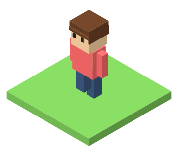
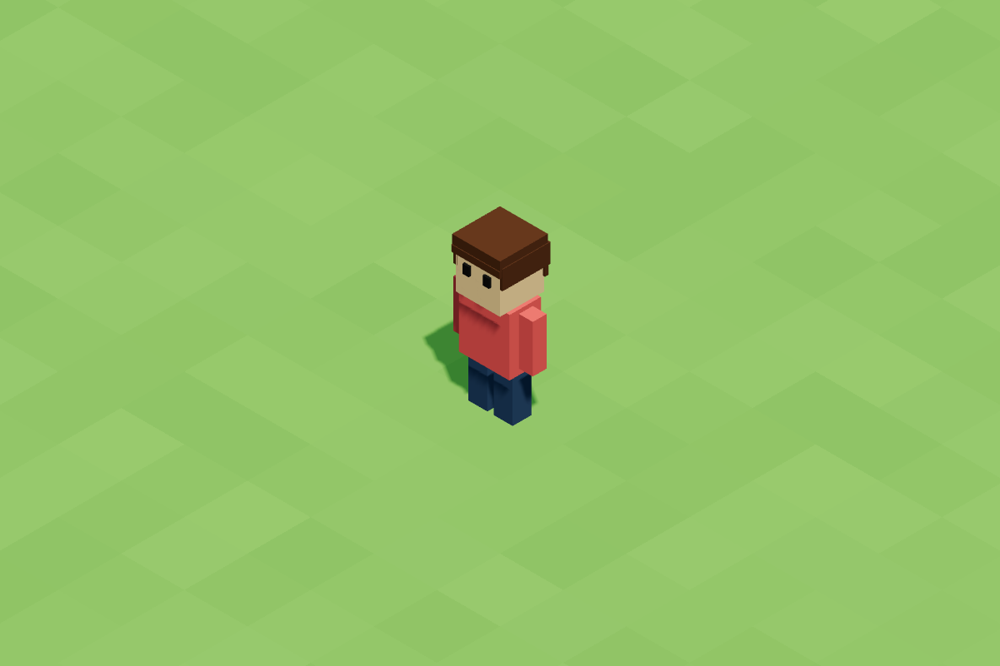

I'm a software engineer. I make things with computers.
I write instructions that tell computers what to do. That's called code.
Junior → Senior → Lead. One step at a time.
When you check the weather, my code helped get it to you! 🌦️
I decide what to build, and check it's right.

Let's make a game together.
It's the same skills as my real job!